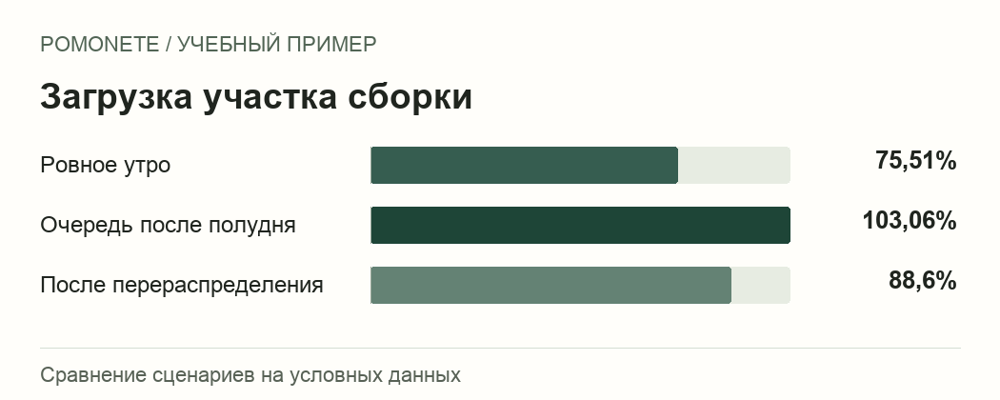

Очередь сборки заказов Яндекс Маркета. Как селлеру посчитать нагрузку
Аналитика работы склада с числом заказов, длительностью сборки и действительным временем до отсечки.
Команда магазина держателей видит в кабинете Яндекс Маркета число заказов. Руководитель хочет понять, успеет ли сборка до ближайшего срока передачи. Для этого нужен журнал очереди, длительность операции и общий объём времени людей, которые действительно могут её выполнить.
Как восстановить очередь
Отберите заказы одной даты передачи и сохраните время готовности к сборке. Умножьте число заказов на среднюю длительность обработки. Доступное время сложите по работникам. Вычтите необходимую подготовку и обязанности, которые нельзя перенести за срок.
Чтобы пересобрать расчёт «Загрузка участка сборки» для своего магазина, перенесите в него исходные числа. В формуле A обозначает «заказы до ближайшего срока», B обозначает «минут на заказ», C обозначает «доступные минуты». Суммарное рабочее время делят на доступное. Доступное время уже должно исключать интервалы, отведённые под другие операции. Запишите рядом период и охват каждого среза. Для оценочных строк оставьте пояснения рядом с исходными значениями. При чтении сводки будет видно, какие из них пока подтверждены.
Загрузка участка сборки = A × B ÷ C × 100
| Условие | Заказы до ближайшего срока | Минут на заказ | Доступные минуты | Загрузка участка сборки |
|---|---|---|---|---|
| Ровное утро | 74 | 5 | 490 | 75,51% |
| Очередь после полудня | 101 | 5 | 490 | 103,06% |
| После перераспределения | 101 | 5 | 570 | 88,6% |

В сценарии «Ровное утро» в формулу подставляем заказы до ближайшего срока = 74, минут на заказ = 5, доступные минуты = 490. Получается 75,51%. Идут привычные позиции с заранее подготовленными упаковками.
В сценарии «Очередь после полудня» в формулу подставляем заказы до ближайшего срока = 101, минут на заказ = 5, доступные минуты = 490. Получается 103,06%. На входе больше заказов, график смены не менялся.
В сценарии «После перераспределения» в формулу подставляем заказы до ближайшего срока = 101, минут на заказ = 5, доступные минуты = 570. Получается 88,6%. На участок добавили время сотрудника. Пересчёт запасов перенесли на завтра, когда у команды есть свободное окно.
Если «Ровное утро» взять за исходную точку, «Очередь после полудня» меняет показатель «загрузка участка сборки» на 27,55 п. п., а «После перераспределения» на 13,09 п. п.. Между двумя последними строками разница составляет -14,46 п. п. при вычитании второй из третьей. Смотрите, какой именно вход изменился между строками. Если менялись объём и условия одновременно, итог сравнения относится ко всему сочетанию.
В пересчёте на исходное значение разница второй строки составляет 36,49%. Здесь в знаменателе модуль первого результата, 75,51%. Для показателя в процентах рядом сохраните и абсолютную разницу в процентных пунктах. Для малого исходного значения процентный скачок может оказаться крупным даже при скромном практическом эффекте. В рабочем отчёте оставьте оба исходных значения, чтобы при расширении выборки можно было пересчитать изменение.
Почему одинаковое число заказов даёт разную работу
Заказы одного размера могут обрабатываться быстрее, чем несколько мелких позиций из разных зон. Разбейте вход на два-три вида и сложите минуты. Если есть необычный объём, посмотрите выборку крупных заказов и отдельно отметьте причину нагрузки.
Для исходной выборки пригодятся журнал склада и временные отметки заказов. Зафиксируйте строки и границы периода, по которым собирался показатель «загрузка участка сборки». Копию выгрузки держите рядом с рабочим расчётом. По ней коллега сможет проверить, что строку отнесли к нужному сценарию, а единица измерения сохранилась при переносе.
Для сравнения выведите короткий журнал с временем поступления работы, началом обработки и моментом передачи. Длительность операции измеряют на нескольких сменах, чтобы короткая спокойная неделя не стала единственной нормой. Товары разных размеров и сложность сборки записывают отдельными группами. На узком участке проверьте распределение работы по часам и общую загрузку за день. Даже при одинаковом дневном итоге в очереди может остаться разное количество заказов.
Что сильнее всего меняет результат
Возьмём сценарий «Очередь после полудня» с результатом 103,06%. В нём последовательно изменим «заказы до ближайшего срока», «минут на заказ», «доступные минуты». Для каждого входа шаг близок к 10% его исходной величины, целые значения округлены. После каждого опыта возвращаем остальные числа к исходным. Так можно выяснить, какой вход уточнять первым, если перед решением мало времени.
- «Заказы до ближайшего срока» меняется с 101 на 111. При прежних остальных входах получается 113,27%, сдвиг составляет 10,2 п. п..
- «Минут на заказ» меняется с 5 на 6. При прежних остальных входах получается 123,67%, сдвиг составляет 20,61 п. п..
- «Доступные минуты» меняется с 490 на 539. При прежних остальных входах получается 93,69%, сдвиг составляет -9,37 п. п..
При выбранных шагах параметр «минут на заказ» дал самый крупный сдвиг величиной 20,61 п. п.. Если в магазине эта величина меняется в узком диапазоне, подставьте обе его границы. Для связанных условий добавьте отдельную строку с одновременным изменением входов и поясните их связь в примечании.
В следующем срезе смоделируйте начало обработки на час позже. Если даже небольшой сдвиг приводит к перегрузке, у текущей смены нет резерва для новой задачи. Для резерва полезнее знать доступные минуты в окне, чем суммарную длительность дня.
Как отреагировать до отсечки
Выделите заказы с ближайшим сроком, сопоставьте ресурсы по часу и перенесите возможные вспомогательные дела. После передачи вернитесь к записи и сравните расчётные минуты с фактическими. Опоздания объясните конкретной стадией, чтобы изменить правильный участок.
Полезно раз в несколько смен собрать пакет отклонений и приложить отметки о причинах. У одного опоздания бывает несколько объяснений, и назначать его первому видимому участку рискованно. Если временный ресурс перемещали между зонами, включите в расчёт, где исчезли эти часы. После пилота проверьте верхний хвост длительности и число заказов, которые перешли за срок.
Оставьте в рабочей таблице причину выбора. Когда селлеры Яндекс Маркета возвращаются к расчёту «загрузка участка сборки», им пригодятся полученное значение, ответственный и дата пересмотра. Если в решении использовался сценарий «Очередь после полудня», перенесите вместе с ним допущения. При обновлении источников сначала проверьте одну исходную строку и только потом пересчитывайте сводку.